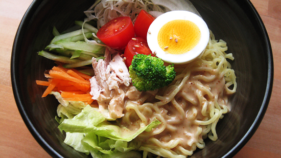
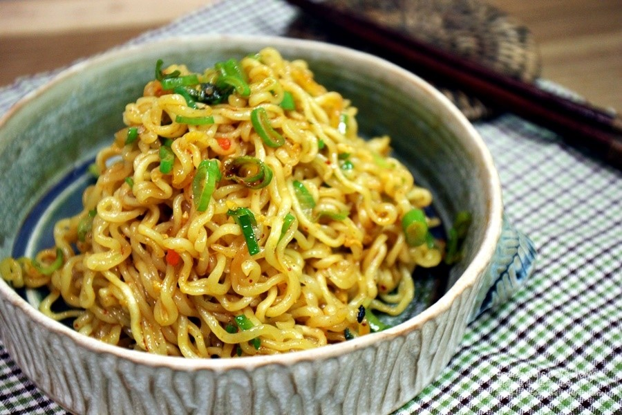
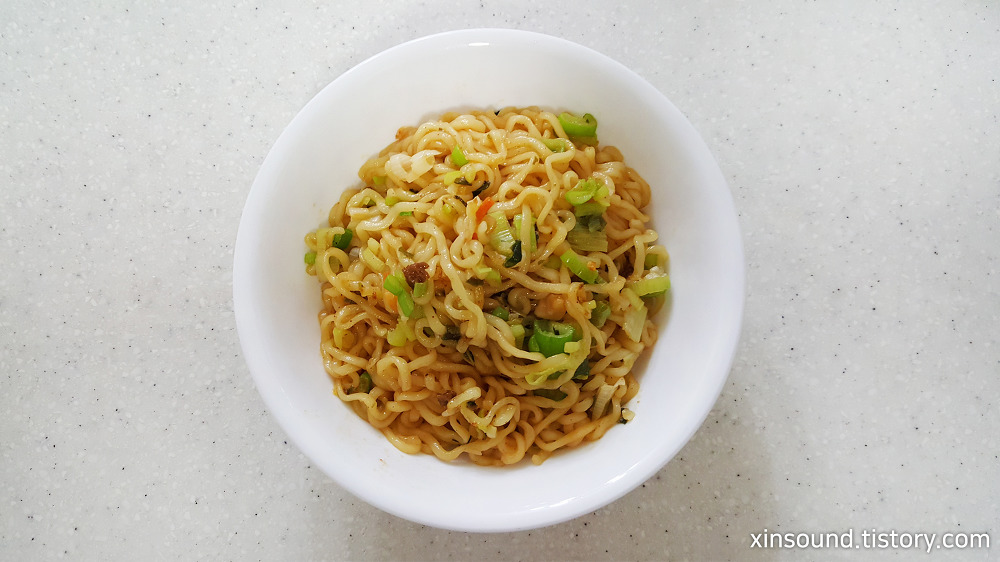
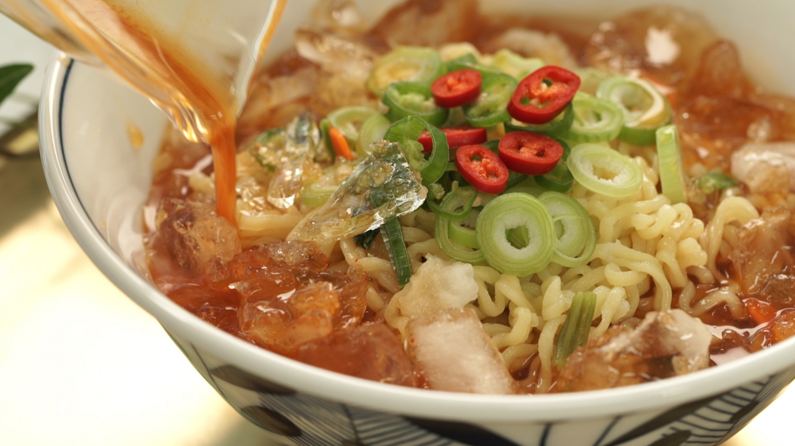
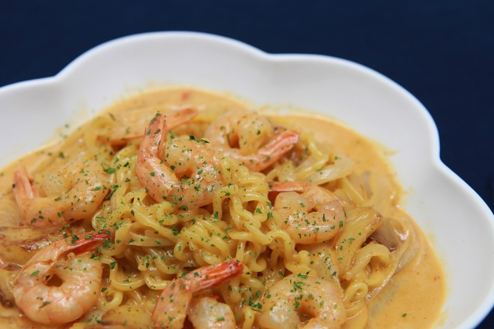

<사라다 라면>
#재료:라면사리,닭가슴살, 적양배추,당근 등
1.당근과 적양배추는 채 썰고 대파는 송송썬다.
2.닭가슴살을 한 입 크기로 뜯는다.
3.끓는 물에 라면사리를 넣어 삶은뒤 찬물에 헹궈 건진다.
4.그릇에 라면사리-닭가슴살-채소를 올린뒤 참깨 드레싱을 뿌려 완성한다.

<볶음 라면>
#재료:라면,신김치,마늘,참기름,올리브유,간장 등
1.끓는 물에 라면 면과 건더기 스프를 넣고 살짝 꼬들꼬들할 정도로 익혀줍니다.
2.물을 따라내고 찬물에 헹궈 체에 밭쳐 물기를 빼줍니다.
3.달군 팬에 식용유와 대파를 넣어 빠르게 볶아 주다가 아채를 넣고 볶습니다.
4.마지막으로 스프1/2을 넣고 빠르게 볶은후 담아냅니다.

<쿠지라이식라면>
#재료:아무라면,달걀1개,식용유,파,치즈,김가루 등
1.먼저 팬에 일반 라면 물의 절반 만큼만 넣어 끓이다.
2.물이 끓으면 건더기 수프와 면을 넣고, 분말스프는 절반만 넣어 끓인다.
3.국물이 자박하게 졸아들고 면발 또한 살짝 설익은 상태가 되도록 긇인다.
4.라면 가운데에 공간을 만들어 달걀 1개를 깨뜨려 넣는다.
5.추가로 슬라이스 치즈를 넣고 뚜껑을 덮어 1분정도 익힌후, 김가루와 쪽파를 넣으면 완성.

<냉라면>
#재료:라면한개, 콩나물한줌, 라면수프1봉,오이,맛살,청양고추,얼음,물,간장,식초,설탕 등
1.먼저 물2컵에 라면수프 1봉 그리고 간장,식초,설탕으로 양념을 넣어 섞어준다.
2.오이와 청양고추, 맛살은 손질하여 준비한다.
3.팔팔끓는 물에 라면과 콩나물을 한줌 넣어 삶아준다.
4.삶겨진 콩나물과 라면은 시원한 물에 행궈 물기를 빼주고 얼물에 담가 준다.
5.마지막으로 라면과 콩나물을 그릇에 담아주고 맛살과 오이를 올린후 미리 만들어둔 육수를 주르륵 부으면 완성!

<신라면 투움바>
#재료:신라면1개,양파반쪽,마늘8개,버터한스푼,치즈2장,우유500ml,칵테일새우10마리 등
1.신라면을 후레이크와 함께 끓여줍니다.
2.버터를 두른 팬에 양파와 마늘을 볶아줍니다.
3.노릇노릇해지면 칵테일 새우를 넣어 함께 볶습니다.
4.다볶아 지면 우유를 넣고, 물을 버리고 준비한 면도 함께 넣어줍니다.
5.마지막으로 신라면 스프1/2개와 후추를 넣어주면 완성!